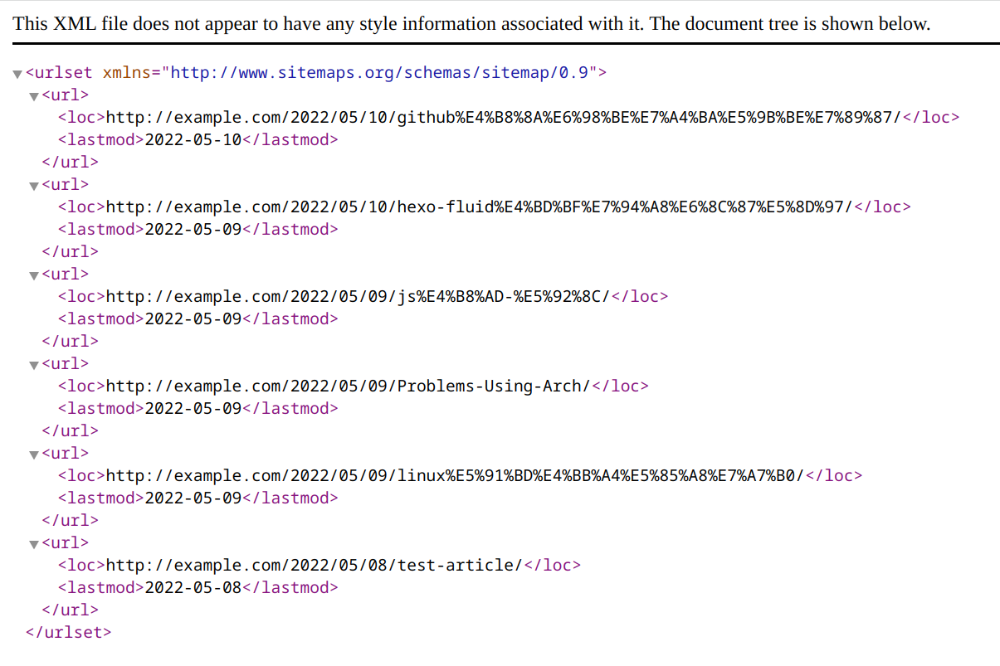

hexo+fluid使用指南
Hexo命令整理
更新博客
1 | |
创建文章
执行如下命令创建一篇新文章，名为《测试文章》
1 | |
执行完成后在source\_posts目录下生成了一个.md文件和一个同名的资源目录(用于存放图片)。
1 | |
删除文章
直接删除本地文件，然后更新博客。
在文章里面显示图片
插件hexo-renderer-marked解决了这个问题。可以只用npm install hexo-renderer-marked命令直接安装，之后在config.yaml中更改配置如下：
1 | |
之后就可以在使用的方式愉快的插入图片了。
Hexo+fluid美化
1. 友链设置
友情链接页用于展示好友的博客入口，默认关闭，开启需要先在 navbar 项中将 links 的注释(#号)删掉。
1 | |
然后找到 links 的配置项，对页面内容进行配置：
1 | |
title: 友链站的标题intro: 站点或博主的简介，可省略link: 跳转链接image: 头像图片，可省略
2.hexo支持emoji
首先进入博客目录,卸载hexo默认的marked渲染器，安装markdown-it渲染器，运行的命令如：
1 | |
之后安装markdown-it-emoji插件：
1 | |
这里的站点配置文件是指位于博客根目录下的 _config.yml，编辑它，然后在末尾添加如下内容：
1 | |
在anchors这里配置需要小心，我不是很喜欢这个风格，于是就删去了。
3.生成站点地图
- 安装站点地图生成插件
1 | |
- 在博客根目录的
_config.yml中添加自动生成sitemap的配置
1 | |
同时确认一下该文件里面url对应的是否是接下来要提交的域名
- 生成和部署
1 | |
此时会在public目录下生成两个文件
sitemap.xml用于提交给谷歌
baidusitemap.xml用于提交给百度
部署成功后，在浏览器打开 你的域名/baidusitemap.xml，成功展示即代表成功

本博客所有文章除特别声明外，均采用 CC BY-SA 4.0 协议 ，转载请注明出处！